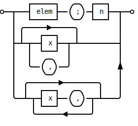

MarkdownToHtml Documentation
The content of this documentation site was build from Markdown sources
with the PowerShell module MarkdownToHtml. This module is hosted as
Open Source project on GitHub at: WetHat/MarkdownToHtml.
Features
- Highly configurable static website projects with configuration file and build script.
- Optional support for GitHub Pages.
- Sites can be used offline (without connection to the internet). All site assets are local.
- Out-of-the box support for:
- Based on Markdig, a fast, powerful, CommonMark compliant Markdown processor for .NET with more than 20 configurable extensions.
- Cascading build configurations. Each subtree in Markdown source tree can now have its dedicated build configuration. Among other things this makes it easy to configure the navitation bar in a directory specific way. New!
Installation and Update
An installable package of this module is hosted on the PowerShell Gallery
Installation
To install the module enter the following command into the command prompt of an admin PowerShell:
PS> Install-Module -Name MarkdownToHTML
Update
To update the module enter the following command into the command prompt of an admin PowerShell:
PS> Update-Module -Name MarkdownToHTMLMake sure you read the release notes
Backward Compatibility
If you are upgrading the currently installed version to a newer version of the same major revision, all conversion or site projects are still fully functional. Unless you are having issues with any of the pre-installed JavaScript libraries no action is required.
When updating to a new major revision there may be incompatibilities which affect existing custom templates and static site projects. Make sure to read the upgrade instructions in the release notes. However, you still may want to upgrade existing custom templates and static site projects to take advantage of new functionality. Check out the release notes in the module's manifest for details.
Quickstart
- Install the MarkdownToHTML. See the Installation section for more details.
- Open a PowerShell command shell.
Convert Some Markdown Files to HTML
- Enter this in a PowerShell command prompt:
PS> Convert-MarkdownToHTML -Path '<directory with markdown files>' -SiteDirectory '<html site directory>' -IncludeExtension 'advanced'- Browse to
<html site directory>and view some of the HTML files in a browser.
Bootstrap a Static Site Project:
- Enter this in a PowerShell command prompt:
PS> New-StaticHTMLSiteProject -ProjectDirectory 'MyProject' PS> cd 'MyProject' PS> ./Build.ps1- Open
docs/README.htmla browser and enjoy the showcase section.
Documentation
Documentation for individual commands can be obtained with the Get-Help command
PS> Get-Help New-StaticHTMLSiteProject -Online
Make sure to use the -Online switch for best reading experience.
Latest Version
- 2.6: Documentation - Release Notes.
Previous Versions
- 2.5: Documentation - Release Notes.
- 2.4: Documentation - Release Notes.
- 2.3: Documentation - Release Notes.
Bugs and Enhancements
If you found an issue with the module or want to suggest and enhancement, head over to the Issues page on GitHub and submit a bug report or enhancement request. Make sure to also check the wiki for tips and the FAQ first.
Feature Showcase
In the following sections some selected features are demonstrated.
Mermaid Diagrams
Mermaid is a Javascript based diagramming and charting tool that renders Markdown-inspired text definitions to create and modify diagrams dynamically.
Markdown extension:
mermaid:~~~ mermaid stateDiagram [*] --> Still Still --> [*] Still --> Moving Moving --> Still Moving --> Crash Crash --> [*] ~~~rendered as:
stateDiagram [*] --> Still Still --> [*] Still --> Moving Moving --> Still Moving --> Crash Crash --> [*]
LaTeX Math
Markdown extensions:
mathematics:$$ \left( \sum_{k=1}^n a_k b_k \right)^2 \leq \left( \sum_{k=1}^n a_k^2 \right) \left( \sum_{k=1}^n b_k^2 \right) $$renders as:
\[ \left( \sum_{k=1}^n a_k b_k \right)^2 \leq \left( \sum_{k=1}^n a_k^2 \right) \left( \sum_{k=1}^n b_k^2 \right) \]
Code Syntax Highlighting
Markdown extension:
common~~~ cpp #include <iostream> int main(int argc, char *argv[]) { /* An annoying "Hello World" example */ for (auto i = 0; i < 0xFFFF; i++) cout << "Hello, World!" << endl; char c = '\n'; unordered_map <string, vector<string> > m; m["key"] = "\\\\"; // this is an error return -2e3 + 12l; } ~~~renders as:
#include <iostream> int main(int argc, char *argv[]) { /* An annoying "Hello World" example */ for (auto i = 0; i < 0xFFFF; i++) cout << "Hello, World!" << endl; char c = '\n'; unordered_map <string, vector<string> > m; m["key"] = "\\\\"; // this is an error return -2e3 + 12l; }
Svgbob Plain Text Diagrams
Svgbob is a diagramming model which uses a set of typing characters to approximate the intended shapes (ASCII art). Used to draw diagrams which are human readable in their Markdown text representation.
Available since version 2.5.0. The example below uses unicode box drawing characters to make the diagrams more readable in Markdown text.
˜˜˜ bob ┌──────┐ .─. ┌───┐ o──┬───┤ elem ├──( ; )─┤ n ├──┬──o │ └──────┘ '─' └───┘ │ │ ╭──────>──────╮ │ │ │ ┌───┐ │ │ ├─┴─┬──┤ x ├──┬─┴──────────┤ │ │ └───┘ │ │ │ │ .─. │ │ │ ╰──( , )──╯ ^ │ '─' │ │ ╭────────>─────────╮ │ │ │ ┌───┐ .-. │ │ ╰──┴─┬─┤ x ├──( , )─┬─┴────╯ │ └───┘ '-' │ ╰───────<──────╯ ˜˜˜renders as:
